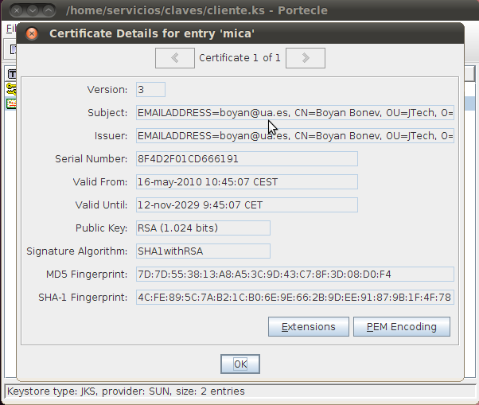

Servicios web seguros. Almacén de certificados
Generar el par de claves
Para usar infraestructura de clave pública, PKI (public key infrastructure), necesitamos poseer una clave privada, un certificado que podamos enviar a otros (que contendrá nuestra clave pública), y certificados de aquellas personas a las que vamos a enviar algo confidencial. Para obtener los certificados necesitaremos tener previamente las claves públicas de las autoridades certificadoras (CA) que los distribuyen y certifican. Estas claves públicas de las CA, están contenidas en certificados, que van firmados por las propias CA (con su propia clave privada).
| Clave privada | Certificado | Firmado por... | Uso |
|---|---|---|---|
| c1-privada | CN=Boyan, DC=jtech, ... Cl.Pública=c1-publica | cCA-privada | Para mí, y para enviar el certificado a otros |
| (no disponible) | CN=Certificate Authority, DC=verysign, ... Cl.Pública=cCA-publica | cCA-privada | Para comunicar con la CA (y así obtener los certificados de los amigos) |
| (no disponible) | CN=Amigo1,DC=dominio1, ... Cl.Pública=c2-publica | cCA-privada | Para cifrar cuando envío a Amigo1 |
| (no disponible) | CN=Amigo2,DC=dominio2, ... Cl.Pública=c3-publica | cCA-privada | Para cifrar cuando envío a Amigo2 |
Este almacén de claves (keystore) se almacena en un archivo, donde cada entrada está compuesta por un conjunto de:
- Alias; Clave privada (si procede); Certificado.
En Java se utiliza la utilidad keytool , que se encuentra en la carpeta bin del JDK, en nuestro caso está en:
/opt/jdk1.6.0_20/bin/keytool
Si tenemos /opt/jdk1.6.0_20/bin/ añadido al PATH, no hará falta especificar la ruta completa del comando (se añade con export PATH=$PATH:$JAVA_HOME/bin/ en sistemas unix-like y estando la variable JAVA_HOME definida). Si tecleamos keytool sin argumentos en una terminal, podremos comprobar si está en el path o no (deberá mostrar una extensa lista de argumentos con los que se usa).
servicios@servicios:~$ keytool sintaxis de keytool: -certreq [-v] [-protected] [-alias <alias>] [-sigalg <algoritmo_firma>] [-file <archivo_csr>] [-keypass <contraseña_clave>] [-keystore <almacén_claves>] [-storepass <contraseña_almacén>] [-storetype <storetype>] [-providername <name>] [-providerclass <provider_class_name> [-providerarg <arg>]] ... [-providerpath <pathlist>] -changealias [-v] [-protected] -alias <alias> -destalias <destalias> [-keypass <contraseña_claves>] [-keystore <almacén_claves>] [-storepass <contraseña_almacén>] [-storetype <storetype>] [-providername <name>] [-providerclass <provider_class_name> [-providerarg <arg>]] ... [-providerpath <pathlist>] -delete [-v] [-protected] -alias <alias> [-keystore <almacén_claves>] [-storepass <contraseña_almacén>] [-storetype <storetype>] [-providername <name>] [-providerclass <provider_class_name> [-providerarg <arg>]] ... [-providerpath <pathlist>] -exportcert [-v] [-rfc] [-protected] [-alias <alias>] [-file <archivo_cert>] [-keystore <almacén_claves>] [-storepass <contraseña_almacén>] [-storetype <storetype>] [-providername <name>] [-providerclass <provider_class_name> [-providerarg <arg>]] ... [-providerpath <pathlist>] -genkeypair [-v] [-protected] [-alias <alias>] [-keyalg <algoritmo_clave>] [-keysize <tamaño_clave>] [-sigalg <algoritmo_firma>] [-dname <nombre_d>] [-validity <días_validez>] [-keypass <contraseña_clave>] [-keystore <almacén_claves>] [-storepass <contraseña_almacén>] [-storetype <storetype>] [-providername <name>] [-providerclass <provider_class_name> [-providerarg <arg>]] ... [-providerpath <pathlist>] -genseckey [-v] [-protected] [-alias <alias>] [-keypass <keypass>] [-keyalg <algoritmo_clave>] [-keysize <tamaño_clave>] [-keystore <almacén_claves>] [-storepass <contraseña_almacén>] [-storetype <storetype>] [-providername <name>] [-providerclass <provider_class_name> [-providerarg <arg>]] ... [-providerpath <pathlist>] -help -importcert [-v] [-noprompt] [-trustcacerts] [-protected] [-alias <alias>] [-file <archivo_cert>] [-keypass <contraseña_clave>] [-keystore <almacén_claves>] [-storepass <contraseña_almacén>] [-storetype <storetype>] [-providername <name>] [-providerclass <provider_class_name> [-providerarg <arg>]] ... [-providerpath <pathlist>] -importkeystore [-v] [-srckeystore <srckeystore>] [-destkeystore <destkeystore>] [-srcstoretype <srcstoretype>] [-deststoretype <deststoretype>] [-srcstorepass <srcstorepass>] [-deststorepass <deststorepass>] [-srcprotected] [-destprotected] [-srcprovidername <srcprovidername>] [-destprovidername <destprovidername>] [-srcalias <srcalias> [-destalias <destalias>] [-srckeypass <srckeypass>] [-destkeypass <destkeypass>]] [-noprompt] [-providerclass <provider_class_name> [-providerarg <arg>]] ... [-providerpath <pathlist>] -keypasswd [-v] [-alias <alias>] [-keypass <contraseña_clave_antigua>] [-new <nueva_contraseña_clave>] [-keystore <almacén_claves>] [-storepass <contraseña_almacén>] [-storetype <storetype>] [-providername <name>] [-providerclass <provider_class_name> [-providerarg <arg>]] ... [-providerpath <pathlist>] -list [-v | -rfc] [-protected] [-alias <alias>] [-keystore <almacén_claves>] [-storepass <contraseña_almacén>] [-storetype <storetype>] [-providername <name>] [-providerclass <provider_class_name> [-providerarg <arg>]] ... [-providerpath <pathlist>] -printcert [-v] [-file <archivo_certif>] -storepasswd [-v] [-new <nueva_contraseña_almacén>] [-keystore <almacén_claves>] [-storepass <contraseña_almacén>] [-storetype <storetype>] [-providername <name>] [-providerclass <provider_class_name> [-providerarg <arg>]] ... [-providerpath <pathlist>]
Creamos una carpeta ~/claves y nos situamos en ella. Generamos un par de claves pública y privada para nuestro cliente de servicios web, y le ponemos el alias "cliente1". Lo almacenamos en el almacén cliente.ks (ks de keystore), y le indicamos a keytool que el algoritmo para generar la clave será el RSA, mientras que el de la firma digital será SHA1 con RSA (por defecto se hubiera usado MD5withRSA, pero SHA1 es más seguro).
servicios@servicios:~/claves$ keytool -genkey -alias cliente1 -keystore cliente.ks -dname cn=cliente1,dc=jtech,dc=ua,dc=es -keyalg RSA -sigalg SHA1withRSA Escriba la contraseña del almacén de claves: cliente1-kspass Volver a escribir la contraseña nueva: cliente1-kspass Escriba la contraseña clave para <cliente1> (INTRO si es la misma contraseña que la del almacén de claves):cliente1-pass Volver a escribir la contraseña nueva: cliente1-pass
La contraseña cliente1-kspass es un string que se añadirá al contenido del almacén antes de generar el código hash. Si alguien malintencionado modifica el almacén, no será capaz de actualizar el hash de forma correcta y cuando keytool abra un almacén con el hash incorrecto, nos avisará. Por otro lado, la contraseña cliente1-pass se usará para encriptar la clave privada de cliente1, para que otras personas no sean capaces de leer la clave privada (es fundamental mantenerla en secreto).
Comprobamos que la entrada ha sido añadida, y keytool nos pregunta la contraseña del almacén de claves, para poder calcular el hash:
<servicios@servicios:~/claves$ keytool -list -v -keystore cliente.ks Escriba la contraseña del almacén de claves: cliente1-kspass Tipo de almacén de claves: JKS Proveedor de almacén de claves: SUN Su almacén de claves contiene entrada 1 Nombre de alias: cliente1 Fecha de creación: 16-may-2010 Tipo de entrada: PrivateKeyEntry Longitud de la cadena de certificado: 1 Certificado[1]: Propietario: CN=cliente1, DC=jtech, DC=ua, DC=es Emisor: CN=cliente1, DC=jtech, DC=ua, DC=es Número de serie: 4befa3e3 Válido desde: Sun May 16 09:50:59 CEST 2010 hasta: Sat Aug 14 09:50:59 CEST 2010 Huellas digitales del certificado: MD5: 55:09:20:EE:52:2A:FD:EC:40:9D:95:C6:F0:87:22:8E SHA1: C2:99:10:31:4F:B5:0A:20:CE:98:2E:59:FD:57:9E:95:4F:B0:36:EB Nombre del algoritmo de firma: SHA1withRSA Versión: 3 ******************************************* *******************************************
El hecho de que el propietario y el emisor sean los mismos, como se puede observar en la entrada mostrada, significa que es un certificado autofirmado (self-signed). Necesitamos que una autoridad certificadora (CA) nos lo firme, y para ello generaremos una petición de certificado:
servicios@servicios:~/claves$ keytool -certreq -alias cliente1 -keystore cliente.ks -file cliente1.csr Escriba la contraseña del almacén de claves: cliente1-kspass Escriba la contraseña clave para <cliente1>: cliente1-pass servicios@servicios:~/claves$ ls cliente1.csr cliente.ks
Ahora podríamos enviar el archivo cliente1.csr a alguna CA conocida, pagando el precio que ésta haya establecido por el servicio.
Configurar una autoridad certificadora
Para configurar una autoridad certificadora (CA) vamos a necesitar la herramienta OpenSSL que se encuentra en www.openssl.org. Si no se encuentra en el sistema, se puede descargar de la página, o lo que es preferible, instalarla con el gestor de paquetes de su sistema operativo.
Creamos la carpeta ~/autoridad y nos situamos en ella. En primer lugar indicamos en una variable de entorno el nombre de fichero que OpenSSL podrá usar para grabar información de semillas aleatorias:
export RANDFILE=rand
Ahora vamos a ejecutar el comando openssl indicándole que genere una petición de certificado (-req) creando una nueva clave privada (-new), colocándola en el archivo CAkey.pem, y colocando el la petición de certificado en CAreq.pem.
servicios@servicios:~/autoridad$ openssl req -new -keyout CAkey.pem -out CAreq.pem Generating a 1024 bit RSA private key ..........................++++++ ......++++++ writing new private key to 'CAkey.pem' Enter PEM pass phrase: ca-pass Verifying - Enter PEM pass phrase: ca-pass ----- You are about to be asked to enter information that will be incorporated into your certificate request. What you are about to enter is what is called a Distinguished Name or a DN. There are quite a few fields but you can leave some blank For some fields there will be a default value, If you enter '.', the field will be left blank. ----- Country Name (2 letter code) [AU]:ES State or Province Name (full name) [Some-State]:Alicante Locality Name (eg, city) []:Alicante Organization Name (eg, company) [Internet Widgits Pty Ltd]:Universidad de Alicante Organizational Unit Name (eg, section) []:JTech Common Name (eg, YOUR name) []:Boyan Bonev Email Address []:boyan@ua.es Please enter the following 'extra' attributes to be sent with your certificate request A challenge password []: An optional company name []:
No introducimos ninguna "challenge password", para que no se nos requiera al iniciar Apache.
A continuación generamos un certificado autofirmado, indicando que sea válido hasta dentro de 7120 días, que cumple el estándar x509, que lo genere en el archivo CAcert.pem, y le pasamos la clave privada con la que debe autofirmarlo (CAkey.pem), así como el archivo que contiene la petición de certificado (CAreq.pem), y también la ruta del archivo de configuración de OpenSSL para que añada opciones extendidas en la sección v3_ca del certificado.
servicios@servicios:~/autoridad$ openssl x509 -signkey CAkey.pem -req
-days 7120 -in CAreq.pem -out CAcert.pem -extfile /etc/ssl/openssl.cnf
-extensions v3_ca
Signature ok
subject=/C=ES/ST=Alicante/L=Alicante/O=Universidad de Alicante/OU=JTech/
CN=Boyan Bonev/emailAddress=boyan@ua.es
Getting Private key
Enter pass phrase for CAkey.pem: ca-pass
servicios@servicios:~/autoridad$ ls
CAcert.pem CAkey.pem CAreq.pem rand
Ya podemos utilizar esta autoridad certificadora para firmar la petición de certificado del cliente1: cliente1.csr. En primer lugar generamos un archivo de texto con números de serie en hexadecimal que OpenSSL utilizará para ir asignando a cada nuevo certificado que emita.
servicios@servicios:~/autoridad$ echo 02 > nserie.txt servicios@servicios:~/autoridad$ cat nserie.txt 02
Ahora, para firmar la petición de certificado de cliente1, indicamos con qué certificado lo debe hacer (CAcert.pem), la clave privada de la autoridad certificadora (CAkey.pem), el request en sí (~/claves/cliente1.csr), e indicamos también que se genere en la carpeta de claves, con el nombre cliente1.cer (~/claves/cliente1.cer).
servicios@servicios:~/autoridad$ openssl x509 -CA CAcert.pem -CAkey CAkey.pem -CAserial nserie.txt -req -in ../claves/cliente1.csr -out ../claves/cliente1.cer -days 365 Signature ok subject=/DC=es/DC=ua/DC=jtech/CN=cliente1 Getting CA Private Key Enter pass phrase for CAkey.pem: ca-pass servicios@servicios:~/autoridad$ cd ../claves/ servicios@servicios:~/claves$ ls cliente1.cer cliente1.csr cliente.ks
Importar certificados al almacén
Nuestro almacén de certificados es cliente.ks. Vamos a importar en él el certificado autofirmado de la autoridad certificadora que hemos configurado. Así, cuando importemos el certificado de cliente1, que es certificado por nuestra propia CA, éste no será rechazado porque ya contamos con la clave pública de la CA.
servicios@servicios:~/claves$ keytool -import -alias miCA -file ../autoridad/CAcert.pem -keystore cliente.ks Escriba la contraseña del almacén de claves: Propietario: EMAILADDRESS=boyan@ua.es, CN=Boyan Bonev, OU=JTech, O=Universidad de Alicante, L=Alicante, ST=Alicante, C=ES Emisor: EMAILADDRESS=boyan@ua.es, CN=Boyan Bonev, OU=JTech, O=Universidad de Alicante, L=Alicante, ST=Alicante, C=ES Número de serie: 8f4d2f01cd666191 Válido desde: Sun May 16 10:45:07 CEST 2010 hasta: Mon Nov 12 09:45:07 CET 2029 Huellas digitales del certificado: MD5: 7D:7D:55:38:13:A8:A5:3C:9D:43:C7:8F:3D:08:D0:F4 SHA1: 4C:FE:89:5C:7A:B2:1C:B0:6E:9E:66:2B:9D:EE:91:87:9B:1F:4F:78 Nombre del algoritmo de firma: SHA1withRSA Versión: 3 Extensiones: #1: ObjectId: 2.5.29.14 Criticality=false SubjectKeyIdentifier [ KeyIdentifier [ 0000: C0 84 F6 A8 8E 15 0F F4 FF 2C AF 1C 06 A6 D3 3F .........,.....? 0010: 7D 60 BA A9 .`.. ] ] #2: ObjectId: 2.5.29.19 Criticality=false BasicConstraints:[ CA:true PathLen:2147483647 ] #3: ObjectId: 2.5.29.35 Criticality=false AuthorityKeyIdentifier [ KeyIdentifier [ 0000: C0 84 F6 A8 8E 15 0F F4 FF 2C AF 1C 06 A6 D3 3F .........,.....? 0010: 7D 60 BA A9 .`.. ] [EMAILADDRESS=boyan@ua.es, CN=Boyan Bonev, OU=JTech, O=Universidad de Alicante, L=Alicante, ST=Alicante, C=ES] SerialNumber: [ 8f4d2f01 cd666191] ] ¿Confiar en este certificado? [no]: si Se ha añadido el certificado al almacén de claves
Se pregunta explícitamente al usuario si confía en el certificado, ya que éste es autofirmado, y por tanto se trata de una cuestión de confianza. Si confiamos y lo importamos, entonces automáticamente confiamos en todos los certificados digitales emitidos por él. Ahora ya podemos importar el certificado de cliente1, que está certificado por la CA con cuyo certificado cuenta el almacén de claves. Especificamos el alias (cliente1) el archivo con el certificado (cliente1.cer), y el almacén de claves (cliente.ks):
servicios@servicios:~/claves$ keytool -import -alias cliente1 -file cliente1.cer -keystore cliente.ks Escriba la contraseña del almacén de claves: cliente1-kspass Escriba la contraseña clave para <cliente1>: cliente1-pass Se ha instalado la respuesta del certificado en el almacén de claves
Ahora podemos comprobar el contenido del almacén, o bien utilizando de nuevo la herramienta keytool,
servicios@servicios:~/claves$ keytool -list -v -keystore cliente.ks Escriba la contraseña del almacén de claves: Tipo de almacén de claves: JKS Proveedor de almacén de claves: SUN Su almacén de claves contiene 2 entradas Nombre de alias: mica Fecha de creación: 16-may-2010 Tipo de entrada: trustedCertEntry Propietario: EMAILADDRESS=boyan@ua.es, CN=Boyan Bonev, OU=JTech, O=Universidad de Alicante, L=Alicante, ST=Alicante, C=ES Emisor: EMAILADDRESS=boyan@ua.es, CN=Boyan Bonev, OU=JTech, O=Universidad de Alicante, L=Alicante, ST=Alicante, C=ES Número de serie: 8f4d2f01cd666191 Válido desde: Sun May 16 10:45:07 CEST 2010 hasta: Mon Nov 12 09:45:07 CET 2029 Huellas digitales del certificado: MD5: 7D:7D:55:38:13:A8:A5:3C:9D:43:C7:8F:3D:08:D0:F4 SHA1: 4C:FE:89:5C:7A:B2:1C:B0:6E:9E:66:2B:9D:EE:91:87:9B:1F:4F:78 Nombre del algoritmo de firma: SHA1withRSA Versión: 3 Extensiones: #1: ObjectId: 2.5.29.14 Criticality=false SubjectKeyIdentifier [ KeyIdentifier [ 0000: C0 84 F6 A8 8E 15 0F F4 FF 2C AF 1C 06 A6 D3 3F .........,.....? 0010: 7D 60 BA A9 .`.. ] ] #2: ObjectId: 2.5.29.19 Criticality=false BasicConstraints:[ CA:true PathLen:2147483647 ] #3: ObjectId: 2.5.29.35 Criticality=false AuthorityKeyIdentifier [ KeyIdentifier [ 0000: C0 84 F6 A8 8E 15 0F F4 FF 2C AF 1C 06 A6 D3 3F .........,.....? 0010: 7D 60 BA A9 .`.. ] [EMAILADDRESS=boyan@ua.es, CN=Boyan Bonev, OU=JTech, O=Universidad de Alicante, L=Alicante, ST=Alicante, C=ES] SerialNumber: [ 8f4d2f01 cd666191] ] ******************************************* ******************************************* Nombre de alias: cliente1 Fecha de creación: 16-may-2010 Tipo de entrada: PrivateKeyEntry Longitud de la cadena de certificado: 2 Certificado[1]: Propietario: CN=cliente1, DC=jtech, DC=ua, DC=es Emisor: EMAILADDRESS=boyan@ua.es, CN=Boyan Bonev, OU=JTech, O=Universidad de Alicante, L=Alicante, ST=Alicante, C=ES Número de serie: 3 Válido desde: Sun May 16 10:56:50 CEST 2010 hasta: Mon May 16 10:56:50 CEST 2011 Huellas digitales del certificado: MD5: B4:8D:FE:CB:2B:B7:8A:56:DF:9F:75:42:61:75:34:0B SHA1: 79:6F:CF:5A:9C:04:79:76:E6:F7:0C:24:66:5C:5A:9A:15:D5:52:75 Nombre del algoritmo de firma: SHA1withRSA Versión: 1 Certificado[2]: Propietario: EMAILADDRESS=boyan@ua.es, CN=Boyan Bonev, OU=JTech, O=Universidad de Alicante, L=Alicante, ST=Alicante, C=ES Emisor: EMAILADDRESS=boyan@ua.es, CN=Boyan Bonev, OU=JTech, O=Universidad de Alicante, L=Alicante, ST=Alicante, C=ES Número de serie: 8f4d2f01cd666191 Válido desde: Sun May 16 10:45:07 CEST 2010 hasta: Mon Nov 12 09:45:07 CET 2029 Huellas digitales del certificado: MD5: 7D:7D:55:38:13:A8:A5:3C:9D:43:C7:8F:3D:08:D0:F4 SHA1: 4C:FE:89:5C:7A:B2:1C:B0:6E:9E:66:2B:9D:EE:91:87:9B:1F:4F:78 Nombre del algoritmo de firma: SHA1withRSA Versión: 3 Extensiones: #1: ObjectId: 2.5.29.14 Criticality=false SubjectKeyIdentifier [ KeyIdentifier [ 0000: C0 84 F6 A8 8E 15 0F F4 FF 2C AF 1C 06 A6 D3 3F .........,.....? 0010: 7D 60 BA A9 .`.. ] ] #2: ObjectId: 2.5.29.19 Criticality=false BasicConstraints:[ CA:true PathLen:2147483647 ] #3: ObjectId: 2.5.29.35 Criticality=false AuthorityKeyIdentifier [ KeyIdentifier [ 0000: C0 84 F6 A8 8E 15 0F F4 FF 2C AF 1C 06 A6 D3 3F .........,.....? 0010: 7D 60 BA A9 .`.. ] [EMAILADDRESS=boyan@ua.es, CN=Boyan Bonev, OU=JTech, O=Universidad de Alicante, L=Alicante, ST=Alicante, C=ES] SerialNumber: [ 8f4d2f01 cd666191] ] ******************************************* *******************************************
O bien utilizando alguna herramienta con entorno gráfico, como por ejemplo la herramienta Portecle, que es de código libre y está hecha en Java, utiliznado la librería (mejor dicho, la biblioteca) BouncyCastle. La herramienta se puede descargar de http://sourceforge.net/projects/portecle/ y es suficiente con descomprimirla y ejecutar con el comando
java -jar portecle-1.5/portecle.jar
Podemos abrir el archivo cliente.ks, nos preguntará por la password, introducimos cliente1-kspass, y obtenemos una vista como la siguiente:
Si hacemos doble click sobre cliente1, obtendremos una ventana que nos muestra dos certificados:

y:
El primero de ellos es el certificado del cliente, y ha sido emitido por la autoridad certificadora cuyo certificado tenemos en segundo lugar, véase cómo el Issuer del primer certificado coincide con el Subject (que debería llamarse Owner - propietario) del segundo certificado. Finalmente abrimos el certificado de miCA (el alias está en minúsculas porque no es case-sensitive):

Y podemos comprobar cómo este certificado es autofirmado (Owner e Issuer coinciden) y además podemos comprobar, también por el número de serie, cómo este certificado es el mismo que el segundo que vimos en cliente1.
De la misma manera que hemos generado la petición de certificado, y hemos importado el certificado obtenido en el almacén cliente.ks, vamos a generar otro certificado para el servidor, y lo vamos a importar en un almacén llamado servidor.ks:
servicios@servicios:~/claves$ keytool -genkey -alias servidor1 -keystore servidor.ks -dname cn=Servidor1,dc=jtech,dc=ua,dc=es -keyalg RSA -sigalg SHA1withRSA Escriba la contraseña del almacén de claves: servidor1-kspass Volver a escribir la contraseña nueva: servidor1-kspass Escriba la contraseña clave para <servidor1> (INTRO si es la misma contraseña que la del almacén de claves):servidor1-pass Volver a escribir la contraseña nueva: servidor1-pass
servicios@servicios:~/claves$ keytool -certreq -alias servidor1 -keystore servidor.ks -file servidor1.csr Escriba la contraseña del almacén de claves: servidor1-kspass Escriba la contraseña clave para <servidor1>: servidor1-pass
servicios@servicios:~/claves$ openssl x509 -CA ../autoridad/CAcert.pem -CAkey ../autoridad/CAkey.pem -CAserial ../autoridad/nserie.txt -req -in servidor1.csr -out servidor1.cer -days 365 Signature ok subject=/DC=es/DC=ua/DC=jtech/CN=Servidor1 Getting CA Private Key Enter pass phrase for ../autoridad/CAkey.pem: ca-pass
servicios@servicios:~/claves$ keytool -import -alias miCA -keystore servidor.ks -file ../autoridad/CAcert.pem Escriba la contraseña del almacén de claves: servidor1-kspass Propietario: EMAILADDRESS=boyan@ua.es, CN=Boyan Bonev, OU=JTech, O=Universidad de Alicante, L=Alicante, ST=Alicante, C=ES Emisor: EMAILADDRESS=boyan@ua.es, CN=Boyan Bonev, OU=JTech, O=Universidad de Alicante, L=Alicante, ST=Alicante, C=ES Número de serie: 8f4d2f01cd666191 Válido desde: Sun May 16 10:45:07 CEST 2010 hasta: Mon Nov 12 09:45:07 CET 2029 Huellas digitales del certificado: MD5: 7D:7D:55:38:13:A8:A5:3C:9D:43:C7:8F:3D:08:D0:F4 SHA1: 4C:FE:89:5C:7A:B2:1C:B0:6E:9E:66:2B:9D:EE:91:87:9B:1F:4F:78 Nombre del algoritmo de firma: SHA1withRSA Versión: 3 Extensiones: #1: ObjectId: 2.5.29.14 Criticality=false SubjectKeyIdentifier [ KeyIdentifier [ 0000: C0 84 F6 A8 8E 15 0F F4 FF 2C AF 1C 06 A6 D3 3F .........,.....? 0010: 7D 60 BA A9 .`.. ] ] #2: ObjectId: 2.5.29.19 Criticality=false BasicConstraints:[ CA:true PathLen:2147483647 ] #3: ObjectId: 2.5.29.35 Criticality=false AuthorityKeyIdentifier [ KeyIdentifier [ 0000: C0 84 F6 A8 8E 15 0F F4 FF 2C AF 1C 06 A6 D3 3F .........,.....? 0010: 7D 60 BA A9 .`.. ] [EMAILADDRESS=boyan@ua.es, CN=Boyan Bonev, OU=JTech, O=Universidad de Alicante, L=Alicante, ST=Alicante, C=ES] SerialNumber: [ 8f4d2f01 cd666191] ] ¿Confiar en este certificado? [no]: si Se ha añadido el certificado al almacén de claves
servicios@servicios:~/claves$ keytool -import -alias servidor1 -keystore servidor.ks -file servidor1.cer Escriba la contraseña del almacén de claves: servidor1-kspass Escriba la contraseña clave para <servidor1>: servidor1-pass Se ha instalado la respuesta del certificado en el almacén de claves
Ahora sólo falta añadir en el almacén de claves del cliente, el certificado del servidor. El cliente necesitará la clave pública del servidor porque el servidor utilizará su propia clave privada para firmar o para encriptar. Por otro lado, el servidor no necesitaría la clave pública del cliente en el almacén de certificados, ya que el cliente envía su certificado junto con el mensaje. Procedemos a importar el certificado servidor1.cer al almacén cliente.ks:
servicios@servicios:~/claves$ keytool -import -alias servidor1 -keystore cliente.ks -file servidor1.cer Escriba la contraseña del almacén de claves: cliente1-kspass Se ha añadido el certificado al almacén de claves
servicios@servicios:~/claves$ ls cliente1.cer cliente.ks servidor1.csr cliente1.csr servidor1.cer servidor.ks
Ya tenemos hechos los keystore del cliente y del servidor, y serán válidos durante un año, según hemos especificado en los certificados.
Ejercicios
Contenido de los almacenes de claves
En https://xwss.dev.java.net/ podemos descargarnos almacenes de certificados (keystore) y almacenes de confianza (truststore) válidos. Estúdiense sus certificados y sus emisores, y la relación que existe entre ellos, para repasar los conceptos de la sesión.